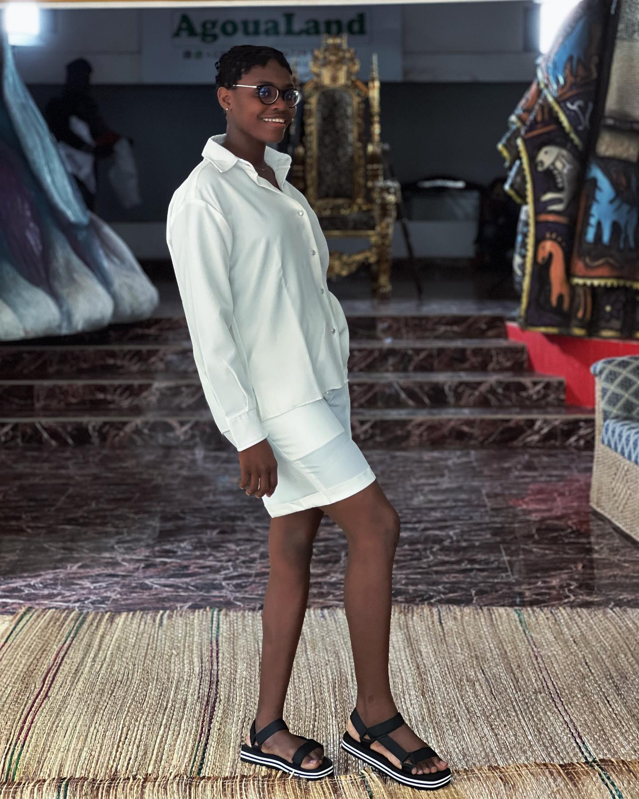

Chargee de communication
Mairie des Jeunes de Grand-Popo : porter la voix d'une institution jeunesse avec justesse.
Parcours
Mon parcours reflete une presence active dans la communication, l'engagement citoyen et la creation.
Chaque role renforce le meme socle : proximite, expression claire et capacite a faire avancer les actions.

Etapes
Chaque etape confirme une chose : la polyvalence n'efface pas la coherence, elle la rend plus utile sur le terrain.
Mairie des Jeunes de Grand-Popo : porter la voix d'une institution jeunesse avec justesse.
Mobiliser la jeunesse autour de la participation citoyenne et des enjeux locaux.
Coordination et representation d'une association engagee pour l'autonomisation feminine.
Promotion artistique et mise en lumiere de talents creatifs dans un univers culturel exigeant.
Une initiative personnelle a la croisee de la creation, du commerce et de la valorisation artistique.
Une base solide pour porter un message avec precision, presence et impact.
Parcours visible
La polyvalence ne disperse pas la marque personnelle. Elle montre une capacite concrete a agir dans des contextes complementaires.
Reseaux sociaux
La presence digitale ne sert pas seulement a etre vue. Elle prolonge la parole, installe la confiance et ouvre des collaborations.
Engagement
La page Engagement rassemble les valeurs, la vision et les causes qui orientent chaque collaboration.